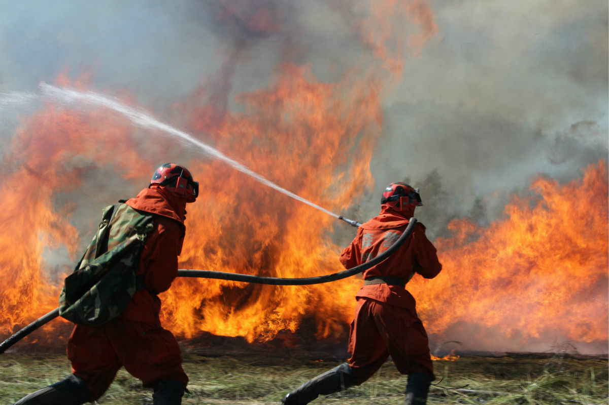

火焰中的英雄！
感动中国四川森林消防员人物事迹
文章作者: Entropy
发布日期: 2022.03.27
“你想当兵吗?”“想”“为什么”，“生命中有了当兵的历史，一辈子不后悔，军人伟大!当兵有意义!”。“我是中华人民，解放军军人，我宣誓，服从中国共产党的领导，全心全意为人民服务，服从命令……”这些军人们的宣誓与使命你们还记得吗?
2019年3月30日下午，四川凉山发生森林火灾，689人第一时间，奔赴到灭火的救援行动中。2019年3月31日，扑火队员在转场途中，风向突变，山火爆燃，30名消防队员来不及撤离，全部葬身火海，这30人中，有三名70后一名80后，24名90后，两名00后，“难忘的一天，爬山涉水，将近走了15个小时，全身都已经不是自己的了……”就是森林火灾消防队中队长张浩，留给这世界的最后一句话，今年，他还未满29岁，刚结婚不久，事发前，他正在用两周仅一次的轮休，陪伴着家人，习惯着时刻绷紧神经，随时接受命令的他，本以为这只是一次平常的救援，却不曾想，这一走，就再也没有回来。

今天，网络上全是大家对凉山30位牺牲者的哀悼，人们称他们为英雄，承担为最可敬的“逆行者”，可我觉得，英雄这个词，太过悲怆，它是苦难的产物，是不得不藏起的恐惧的孤勇，是无数鲜血造就的词汇，却唯独不是幸福的归宿。如果可以，多希望这个世界，永远不需要英雄，多希望人个世界，永远不需要英雄，多希望人生向前的路上，永远没有“逆行者”，多希望这所有的一切，都只是愚人节的一场玩笑，但希望只是希望，逝者已逝，愿活着的我们，能懂得珍惜，现在拥有的一切，因为这一切，都是那些素未谋面的英雄，用生命换来的，它弥足珍贵，无论如何，英雄都应该被铭记，英雄都应该被敬仰，英雄，都应该永垂不朽。
这个世界上，哪有什么岁月静好，只是有英雄，在替我们负重前行，向本次任务牺牲的消防队员致敬，愿你们一路走好，愿天堂再无大火，愿世界一片祥和。
致敬那些可爱的人们！